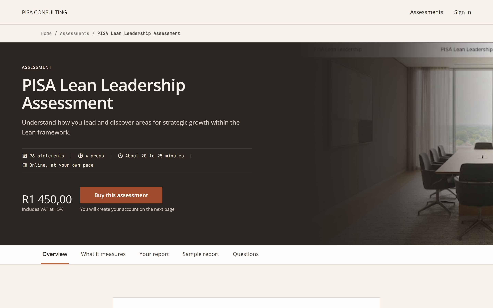

Client Walkthrough
PISA Leadership Assessment Portal
A guided customer and admin journey using the actual exported Stitch HTML screens, from first Landing Page through registration, payment, assessment completion, results, and operational oversight.

Four Journeys
The walkthrough separates each person's path.
The same product supports different moments: a new client buying for the first time, a returning client continuing work, a new admin being onboarded, and a returning admin managing the program.
New Client
A first-time customer always has a next step.
The flow keeps the customer oriented from the first buying decision to the moment they can download the completed result.
Landing Page
The Landing Page establishes the offer.
This is the first decision screen for a new client. It explains the assessment value, price, duration, and purchase path.
Landing Page Mobile
The mobile Landing Page keeps purchase close.
On a phone, the product story stacks cleanly while the purchase action remains easy to find.
Registration
Registration creates the assessment profile.
The customer provides the profile context needed for assessment records, reporting, and future admin visibility.
Account Setup
Account creation prepares checkout and return access.
The login is created before payment so the user can return later, recover access, and resume a saved assessment.
Account Setup Mobile
The mobile account form stays focused.
The mobile variant keeps the sign-up step short and clear before the user moves into payment.
Support Flow
Email and recovery flows protect access.
These moments are part of the customer journey even when they are not all represented as full exported Stitch screens in the current bundle.
Email Confirmation
Email confirmation gives the account a clean handoff.
After verification, the customer is sent back into the product journey instead of being left at a dead end.
Email Confirmation Mobile
The mobile confirmation screen offers useful next steps.
The client can go straight to assessments or return to the dashboard after confirming their address.
Choose Assessment
The client chooses the assessment before starting.
The catalog makes the PISA assessment visible as the current product while keeping the wider portal context intact.
Payment
Order review confirms what the client is buying.
The client sees the assessment, the price, and the Payfast payment action before the transaction is submitted.
Payment Mobile
Mobile checkout keeps order and payment together.
The mobile order review keeps the decision context and the Payfast action in the same focused view.
Payment Confirmation
Payment confirmation closes the purchase loop.
The confirmation screen makes the payment state explicit before assessment access continues.
Assessment
The assessment supports completion without forcing one sitting.
Progress, save state, mobile controls, resume screens, and final reporting all work together so the client can complete the assessment naturally.
Assessment Start
The start screen frames the assessment before answering begins.
The client sees the assessment purpose and navigation controls before entering the statement sequence.
Assessment Questions
Progress remains visible throughout the assessment.
The client can answer each statement with a consistent scale while seeing where they are in the process.
Assessment Mobile
The response scale stays usable on mobile.
The mobile layout keeps focus on the current statements while preserving progress and navigation.
Leadership Behaviours
The desktop question screen keeps the response pattern steady.
This assessment screen shows the same answer rhythm deeper in the journey, with progress and saved state still visible.
Did Not Complete
If the client leaves, progress can be continued later.
This state makes interruption acceptable: the client can save, exit, and return without losing the assessment work already completed.
Resume Assessment
Returning clients can continue from saved progress.
The resume state confirms where the client left off and offers a clear continuation action.
Resume Mobile
The mobile return path gives the client choices.
Mobile users can continue, start over, or view past results from the return screen.
Results And Download
The final result gives the client something tangible.
Completion leads to a results screen with report download access and a save-to-profile option for later retrieval.
Returning Client
The portal brings returning clients back to useful work.
A returning client should not be pushed through purchase again. They sign in, orient from the Client Dashboard - PISA, resume or review what they already own, and retrieve results.
Client Dashboard - PISA
The Client Dashboard - PISA turns access into action.
This is the private client anchor. It shows progress, report access, and the next available assessment action.
Already Owned
Duplicate purchase becomes a continuation path.
The already-owned state protects returning clients from paying again for an assessment they can already access.
Already Owned Mobile
Mobile clients can return without friction.
The mobile state keeps the message direct: the assessment is available and the next action is to continue.
New Admin
Admin onboarding stays separate from client registration.
A new admin is invited by an existing administrator, sets credentials through a secure invite, signs in through the admin login path, and lands on the Admin Dashboard.
Returning Admin
Administrators manage the assessment program from four core screens.
The admin side is an operations journey: monitor the program, manage users, manage assessments, and analyze activity.
Admin Dashboard
The Admin Dashboard shows operational movement.
This is the private admin anchor. It gives administrators a summary of activity, completion, and follow-up signals.
Admin Users
User management gives account-level visibility.
Administrators can see who is registered, how to contact them, their role, their activity status, and the next available account action.
Admin Assessments
Assessment management keeps the signed product clear.
PISA is the current signed assessment work. Additional assessments can be built later, but they should be treated as new scope until quoted and approved.
Admin Analytics
Analytics turns activity into insight.
The analytics screen gives the team a dedicated place to review patterns, performance, and recent assessment outcomes.
Scope Clarity
The current walkthrough stays focused on the signed PISA delivery.
The portal structure supports a broader assessment catalog, but the current build priority is the site, registration infrastructure, PISA assessment logic, gated results, and payment integration after those pieces are tested.